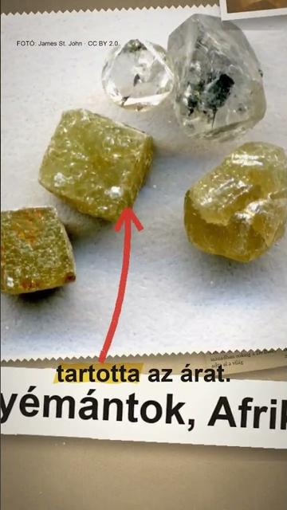

Megnézem a YouTube-onTényleg nem érnek semmit a gyémántok?
Röviden: Hogy a gyémánt semmit nem ér, túlzás: van piaca és ára, de használtan jóval kevesebbet hoz, mint amennyiért vették.
Hogy a gyémánt semmit nem ér, túlzás: van piaca és ára, de használtan jóval kevesebbet hoz, mint amennyiért vették. Két 2026-os, kereskedelmi érdekű kalauz szerint egy gyémántgyűrű jellemzően nagyjából az eredeti ár felét vagy kevesebbet hoz (Diamonds.pro: 20–60%, Bijouterie Jamil: 30–50%); ez becslés, nem mért piaci adat. Az egyik fő ok a bolti árrés, amelyet a használt gyémánt vevője már nem fizet meg. A De Beers a 20. században sokáig a világ gyémántjainak nagyjából 80%-át értékesítette, és a kínálat szabályozásával tartotta az árat; a részesedése az ezredfordulóra kb. kétharmadra csökkent. Az „A Diamond Is Forever” szlogent 1947-ben írta Frances Gerety a philadelphiai N. W. Ayer ügynökségnél. 2004. július 13-án a De Beers Centenary AG az amerikai igazságügyi minisztérium szerint bűnösnek vallotta magát ipari gyémánt árának rögzítésére irányuló összeesküvésben, és 10 millió dollár bírságot kapott; az ügy nem az ékszergyémántról szólt. A De Beers laborgyémánt-márkája, a Lightbox 2018-ban 800 dollárt kért karátonként, 2024 májusában a legolcsóbb sorban 500 dollárt. Ez egy márka listaára, nem a teljes piac. A videó nem befektetési vagy vásárlási tanács. A képek illusztrációk.
Az összes rész forrásokkal: https://valoban.pages.dev/
Források
- U.S. Department of Justice (2004): De Beers Centenary AG Pleads Guilty
- WOSU NPR News (2004): De Beers pleads guilty
- De Beers and Beyond (T. Kretschmer, L. Cabral felügyeletével, London Business School, 1998)
- JCK (2000): CSO RIP
- Sotheby's (2026): How De Beers Changed the Diamond Market
- American RadioWorks: The Diamond Mystique
- Diamonds.pro (2026): Diamond Resale Value
- Bijouterie Jamil (2026): Selling a Diamond or Engagement Ring
- National Jeweler (2024): Lightbox cuts prices
- Rapaport (2024): De Beers Reduces Lightbox Prices
- JCK (2024): Lightbox lowering prices
11 forrás · Hogyan ellenőrzünk?
Hibát találtál? Írd meg nekünk, megnézzük.
Képek és kreditek
Licencek: CC BY 2.0 (https://creativecommons.org/licenses/by/2.0/) · CC BY 4.0 (https://creativecommons.org/licenses/by/4.0/) · Public domain (https://creativecommons.org/publicdomain/mark/1.0/) · CC0 (https://creativecommons.org/publicdomain/zero/1.0/)
• gyémántgyűrű (illusztráció) – Stephen Durham from Pine Bluff, AR, USA, CC BY 2.0 https://commons.wikimedia.org/?curid=10486323
• eljegyzési gyűrű (illusztráció) – Gerry Thomasen from Nanaimo, Canada, CC BY 2.0 https://commons.wikimedia.org/?curid=10486745
• gyémántos gyűrű (illusztráció) – Pittigrilli, CC BY 4.0 https://commons.wikimedia.org/?curid=142663196
• ékszerbolt kirakata, Miami – Phillip Pessar, CC BY 2.0 https://commons.wikimedia.org/?curid=159606756
• zálogház, Manhattan (1930-as évek) – Berenice Abbott, Public domain https://commons.wikimedia.org/?curid=52622687
• nyersgyémánt – DGPC/ADF Luísa Oliveira, CC0 https://commons.wikimedia.org/?curid=163756648
• nyersgyémántok, Afrika – James St. John, CC BY 2.0 https://commons.wikimedia.org/?curid=30975125
• De Beers-mosóüzem, Kimberley, 1900 – Unknown author Unknown author, Public domain https://commons.wikimedia.org/?curid=127413174
• De Beers-bánya (régi felvétel) – Gardner F. Williams, Public domain https://commons.wikimedia.org/?curid=56575902
• szintetikus gyémánt (illusztráció) – Steve Jurvetson, CC BY 2.0 https://commons.wikimedia.org/?curid=906535
• szintetikus gyémánt (illusztráció) – Marie-Lan Taÿ Pamart, CC BY 4.0 https://commons.wikimedia.org/?curid=183084286